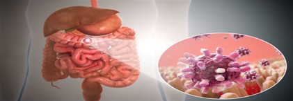

Gastroenteritis
Gastroenteritis is an inflammation of the lining of the stomach and intestines
What causes gastroenteritis
There can be many different causes of gastroenteritis:
- Viruses
- Bacteria
- Parasites
- Chemicals
- Reactions to certain medicines and foodViral
gastroenteritis is the most common type. It can be caused by many different viruses, including noroviruses and
rotaviruses. Some people call viral gastroenteritis the "stomach flu." But this name is not medically correct. It
is not caused by flu viruses. The flu is a respiratory infection that affects your nose, throat and lungs.
When gastroenteritis is caused by consuming foods or drinks contaminated with viruses, bacteria, parasites, or
chemicals, this is called food poisoning.
The viruses, bacteria, and parasites that cause gastroenteritis can also spread from person to person. You could
be infected when you touch something that has the germs on it and then touch your eyes, mouth, or nose.

symptoms of gastroenteritis
The symptoms of gastroenteritis include:
- Diarrhea
- Pain or cramping in your abdomen (belly)
- Nausea
- Vomiting
- Sometimes fever
Gastroenteritis is usually not serious. But it can sometimes cause lead to dehydration or cause severe
symptoms. Certain people are at higher risk for these problems. They include:
- Pregnant women
- Older adults
- People with weakened immune systems or other serious health conditions
- Infants
- Babies who were born prematurely or have other health conditions
If Babies who were born prematurely or have other health conditions
you or a family member are at higher risk and have symptoms of gastroenteritis, contact a health care provider
right away. Even if you are not at high risk, it is possible to become dehydrated or have more serious symptoms.
There are some warning signs to watch for. It's important to contact a provider right away if you or your child
have any of them:
For adults, they include:
- Change in mental state, such as irritability or lack of energy
- Diarrhea lasting more than 2 days
- High fever
- Vomiting often
- Six or more loose stools in a day
- Severe pain in the abdomen (belly) or rectum
- Stools that are black and tarry or contain blood or pus
- Symptoms of dehydration, such as thirst, dry mouth, headache, dark-colored urine, and urinating less than
normal
For infants and children, they include:
- Change in the child's mental state, such as irritability or lack of energy
- Diarrhea lasting more than a day
- Any fever in infants
- High fever in older children
- Frequent loose stools
- Vomiting often
- Severe pain in the abdomen (belly) or rectum
Signs or symptoms of dehydration, such as thirst, dry mouth, urinating less than usual or no wet diapers for 3
hours or more, and no tears when crying Stools that are black and tarry or contain blood or pus
How is gastroenteritis diagnosed
- Will do a physical exam
- Will ask about your symptoms
- May do tests of your stool
treatments for gastroenteritis
Usually, people with gastroenteritis get better on their own, with rest and plenty of fluids and electrolytes.
Your provider may suggest that you take a probiotic. Studies suggest that some probiotics may help shorten a case
of diarrhea.
People with more severe symptoms may need medicines to control nausea or vomiting. Providers may also give other
medicines for certain types of gastroenteritis, such as antibiotics for some bacterial types and antiparasitic
medicines for some parasitic types.
- Drink plenty of fluids and oral rehydration drinks
- Hospital admission and intravenous fluid replacement, are required in critical cases.
- Antibiotics for bacterial gastroenteritis
- Antiparasitic drugs for infections by parasites
- • Refrain from taking anti-vomiting or anti-diarrhoea drugs because these medicines will keep the infection
inside the body. These drugs should be taken as per the doctor's prescription only
Prevention of Gastroenteritis
- Proper handwashing with soap and water is recommended after using the toilet or changing a baby's nappies,
after smoking tobacco, and after handling animals.
- Only use raw and cooked foods with the kitchen appliances if they have been adequately washed after each use.
- Breastfeeding babies instead of using substitute milk formula
- Keep all kitchen surfaces, utensils and appliances clean.
- Store cold food below 5 °C to keep it cool and keep hot food hot above 60 °C to prevent bacterial growth.
- Take care that the food is entirely cooked.
- Keep the toilet and bathroom clean.
- When travelling to other countries where sanitation is a problem, only drink purified bottled water.